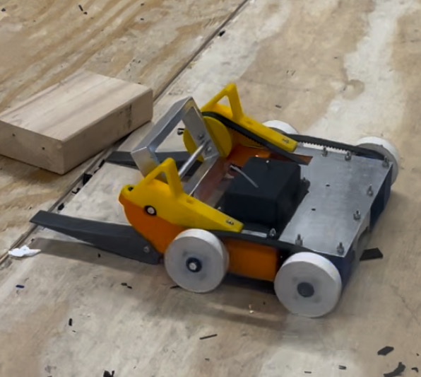
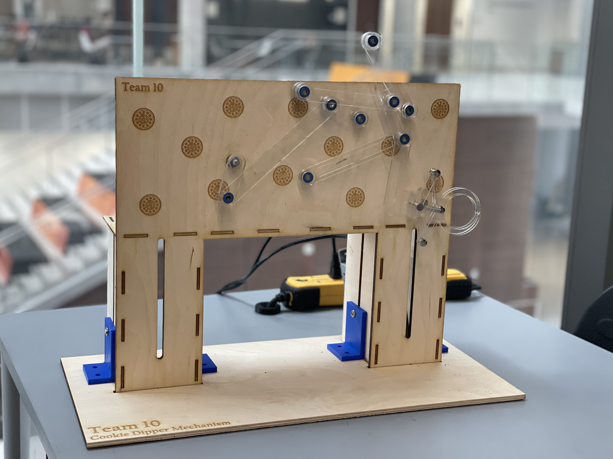
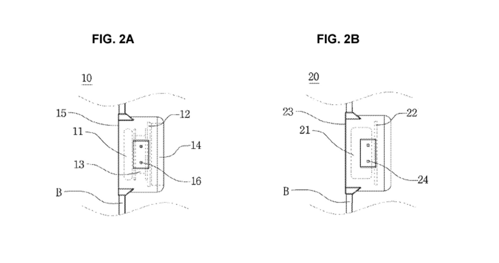

Engineering Projects
A collection of robotics, control systems, and mechanical design projects demonstrating full-stack engineering capabilities.
Distributed Hierarchical MPC Framework
Personal Research Project | Ongoing
Developing a distributed hierarchical Model Predictive Control (MPC) framework specifically designed for humanoid robotics applications. Most modern humanoids utilize an MPC for high-level planning and a whole-body controller for low-level execution. While this hierarchical architecture has proven effective, MPCs are inherently computationally intensive and model-specific, limiting real-time performance and adaptability.
Inspired by the distributed optimization work of Amatucci et al., this project aims to decompose the centralized MPC problem into smaller, parallelizable subproblems that can be solved more efficiently while maintaining coordination across the robot's subsystems.
Technical Approach: Decomposition of whole-body dynamics, distributed optimization algorithms, real-time implementation considerations
Technologies: Python, optimization libraries, MPC formulation, parallel computing
Vision-Based Multi-Agent Control System

Oct 2024 – Dec 2024
Developed a vision-based multi-agent control system using real-time eye tracking to determine which robotic agent the user is looking at. Implemented using OpenCV and Dlib for eye tracking, with an SVM classifier using HOG feature detection to process camera input. The system uses FilterPy and NumPy for state estimation and filtering.
Created an interactive Python application integrating multi-threading for real-time performance and Tkinter/Turtle graphics for visualization.
Technologies: OpenCV, Dlib, SVM, HOG, FilterPy, NumPy, multi-threading, Tkinter
BattleBot Design & Fabrication

Aug 2024 – Dec 2024
Led end-to-end design process for a competitive battle robot, including project planning, requirements analysis, preliminary performance calculations, and formal design reviews to optimize competitive advantage.
Designed and validated mechanical components through Finite Element Analysis (FEA) and dynamic load analysis with iterative prototyping. Fabricated a robust yet compact prototype through 3D printing, CNC machining, and electrical assembly.
Technologies: FEA, dynamic load analysis, 3D printing, CNC machining, electrical assembly, SolidWorks
Basketball Robot: 8-Bar Pick & Place

Aug 2025 – Dec 2025
Simulated, prototyped, and demonstrated an 8-bar linkage pick-and-place mechanism integrated with a custom end effector for basketball handling. Used the Newton-Raphson method for kinematic analysis and trajectory optimization.
Implemented simulation and control in MATLAB and Python, then demonstrated the physical prototype at a live event with 100+ participants.
Technologies: Newton-Raphson method, kinematic analysis, MATLAB, Python, mechanism design, prototyping
Cookie Dipper: 8-Bar Mechanism
Mar 2024 – Apr 2024
Designed an 8-bar pick-and-place mechanism specifically engineered to pick Oreo cookies, dip them into milk, and serve them without getting hands dirty. Utilized Newton-Raphson method for inverse kinematics and path planning.
Simulated in MATLAB/Python and demonstrated the working prototype at a live event with 100+ participants.
Technologies: 8-bar linkage design, Newton-Raphson method, MATLAB, Python, mechanical prototyping
Portable Wearable AED Design

Design Project
Designed a unique 2-piece portable Automated External Defibrillator (AED) that can be worn by lifeguards and safety/security staff at all times in the form of a wristwatch. The design prioritizes accessibility, rapid deployment, and continuous availability in emergency situations.
Technologies: Medical device design, wearable electronics, SolidWorks, human factors engineering